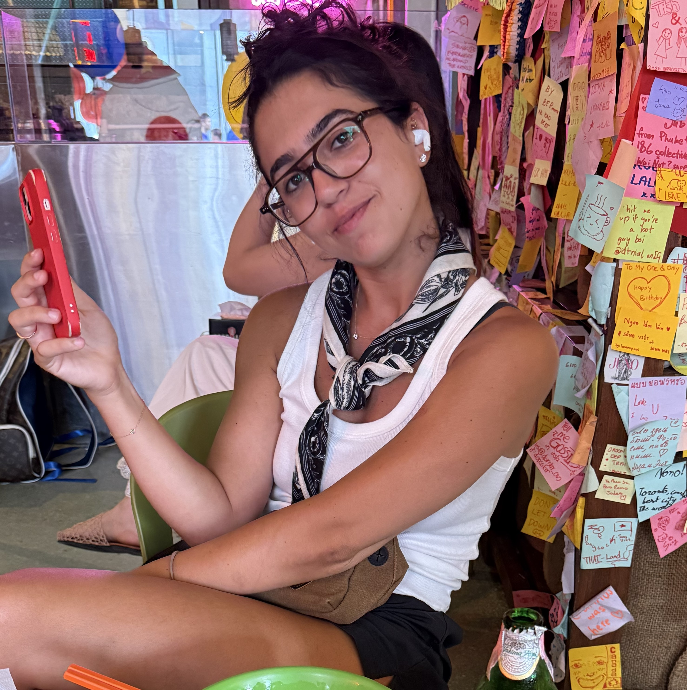

B.Sc. student - Information Systems Management
High-energy with strong analytical skills who thrives on challenges and continuous learning across new fields. Quick learner
with the ability to adapt to new systems and technologies while working with multiple tools. Strong problem-solving
abilities combined with attention to details and a proactive approach to tasks.
B.Sc. in Information Systems Management, GPA: 80
Conducted system analysis and translated business requirements into technical specifications. Designed a database including ERD diagrams for data management. Participated in website development and improved system usability through structured design.
Developed interactive Power BI dashboard for business data analysis by integrating multiple datasets. Wrote SQL queries for data extraction and performed data cleaning to improve accuracy. Built KPIs and visualizations to support data-driven insights